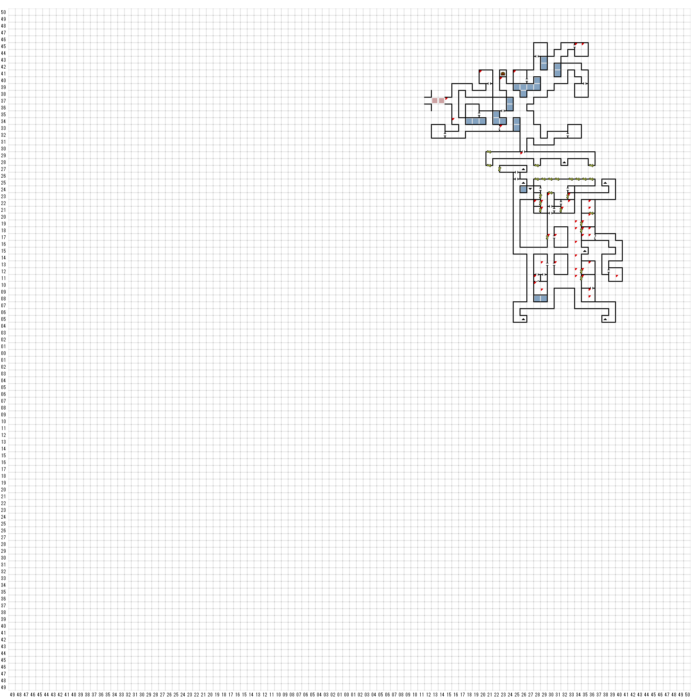

【 東：15，北：37 】
目の前には、まるで底なしの
落とし穴のような巨大な渓谷が
口を開けている。
その谷の向こう側では、
奇妙な格好の黒い肌の女性たちが、
つる草でできたロープを引っ張りながら、
先を争って崖淵から立ち去ろうとしていた。
【 東：16，北：34 】
トンネルの様子をうかがっていると、
奇妙な格好をした黒い肌の女性たちが目に入った。
顔には白い文様を描き込み、
長い槍と盾を持っている。
と、そのうちの一人が、突然
こちらを指さした。そして次の瞬間には、
彼女たちは左の通路に消え去ってしまった。
【 東：20，北：41 】
頭上には、上の方に向かっている洞窟が
暗闇へと続いている。足元には小さな動物の
骨が散乱している。この洞窟に住んでいる
羽のある生き物の骨らしい･･･
（探す）
なにか変わったものはないかと
骨のかけらの間を探っていると、キラキラ光る
金属やガラスの破片がみつかった。
光りものが気を惹いたのだろう。
これで足元に鍵が転がっていたことにも
納得がいく･･･
１ BELL KEY
【 東：23，北：40 】
壁を調べてみると、最近そこを掘り返し、
さらにそのあとを石で埋めた形跡が
みつかった。まるで誰かが
通路を掘り、そのあとを塞いで
いったかのようであった。
使用 つるはし
（先に進める）
【 東：23，北：33 】
洞窟の入り口から落ちた石がトンネルをくぐる
通路を塞いでいる。その岩はびっしりと
積み重なっており、とても手で
どけることはできそうになかった。
使用 つるはし
先に進める
【 東：25，北：41 】
散らばった骨々は、少し冒険が過ぎた
哀れな人々の末路を語っているかのようであった･･･
骨の間を探っていると
気になる鍵が一つみつかった。
DUNGEON KEY 1
【 東：26，北：29 】
＊ 危険地帯 ＊
開聞厳禁
常時厳守
【 東：28，北：22 】
人間の骨の残骸らしきものが、
地下牢の壁にもたれかかっていた。
最後の時以来、それに触れたものは
いないようであった。
探す
骨の間を探っていると、石がゆるんで
床から突き出しているところがみつかった。
その意思を外して下をのぞき込むと、
そおには奇妙な文字で書き記された、
小さな航海日誌のようなものが入っていた。
ほとんどのページはよごれすぎていて
読むことはできなかったが、最後の方の一部は、
もしその文字を解読することができるなら、
なんとか読むことはできそうだった。
死者の日記
HARMONIUM
【 東：28，北：11 】
探す
ボタンを押した
（隠し扉開く）
【 東：28，北：10 】
この小さな部屋の壁には、昔は
武器棚が備え付けられていたようである。
今はそれも崩れ落ち、床の上で
朽ち果てている。目の前ｎ壁際には、
くずが山のように積みあがっていた。
【 東：29，北：22 】
JAILER KEYで開く
【 東：29，北：21 】
JAILER KEYで開く
【 東：29，北：13 】
部屋中に人間のからだが転がっていた。
一目見ただけでは、皆死んでいるようにしか
見えなかった。
大きな物音が・・・
突然・・・
ENCOUNT
BRIGANS 2
ROGUES ４
勝利
3 IRON KEY
【 東：29，北：9 】
おおきくて
ボロボロに
【 東：30，北：23 】
JAILERKEYで開く
【 東：30，北：17 】
（西のドア）
船長のねぐら
立ち入り禁止
ドアに小さな隙間が開いた。
そしてその後ろから、不気味な声が響いた。
「兄弟ぇ、合言葉ぁを言ってくんなぁ」
間違える
「そいつは違うぜ！」
【 東：31，北：17 】
ENCOUNT
【 東：31，北：13 】
この部屋にあるものといえば、
部屋中に散らばってる寝台の破片だけであった。
ちょっと待った！
なにか、物音が聞こえる
物静かで、神秘的な暗い感じの男が
影の中から現れた。
「掘り出し物に興味はないかね？」
買い物できる
「話す」でフリートーク
＊F1押してかなにして「さようなら」で抜ける
■話す
あなた だれ ですか ？
俺はクイークエグ
すぬーぷちぇり
フランス人はまだ探してるぜ！
あいことば
合言葉は教えてやるよ。ただし情報が先だ。
じょうほう
じょうほう とは ？
船長は宝箱をどこに埋めた？
たからばこ とは ？
宝がなければ合言葉もなしだ！
せんちょう どこ ですか？
「船長のねぐら」のボスだ。
【 東：32，北：21 】
部屋の向こう側に、朽ちた机が
崩れ落ちている。明かに真中あたりが
たたき割られていて、その周りには
かなりぼろぼろになった書類が散乱している。
どうもそれはなにか法律に
関係する文書のようで、
犯罪の告発と刑の執行命令が
書き記されていた。
【 東：33，北：23 】
人間の骨の残骸らしきものが、
地下牢の壁にもたれかかっていた。
最後の時以来ｍ、それに触れたものは
いなかったようであった。
【 東：33，北：22 】
（探す）
机の下の小仕切りの中に
鍵が一つ隠れていた。
1 JAILER KEY
【 東：34，北：45 】
たくさんの骨が、この怪物のすみかに
転がっていた。ここの怪物がかなり
大食らいだったのは間違いないだろう。
無理矢理ここに引きずり込まれた
犠牲者の、遺物のかけらもいくつか
残っていた。
【 東：34，北：19 】
IRON KEYで開く
【 東：34，北：18 】
IRON KEYで開く
【 東：34，北：16 】
誰が飲みますか
不明
体力・スタミナは回復しない
【 東：34，北：14 】
誰が飲みますか
毒
【 東：34，北：12 】
IRON KEYで開く
【 東：34，北：11 】
KNOCKKNOCKで開けた
（IRON KEYで開くかも）
【 東：35，北：45 】
破片のほとんどはただのゴミに
なってしまっていたが、一つまだ
使いものになりそうなものがみつかった。
１ つるはし
【 東：35，北：19 】
部屋には大切そうなものは一切なく、
おそらく物置として使われていた
ようである。
【 東：35，北：18 】
部屋の壁は色あせた落書や
汚いはしりがきで埋められていた。
床には壊れたテーブルが
いくつか散らばっていた。
オークのバカ騒ぎ
金曜夜8時
（北の壁の落書）
【 東：35，北：17 】
＄＄探索中＄＄
スヌープチェリ
みつけた方には謝礼
ル・モンテスまで連絡を
（南の壁の落書）
【 東：35，北：12 】
腐って床に落ちている古い
気の棚は、昔は貯蔵品置場
だったのであろう。
壊れかけた古い鎧かけは、
部屋の角でゆっくりと粉々になっていった。
【 東：35，北：11 】
部屋は４つの医師のテーブルで仕切られていた。
その置き方の整然さから考えるｔｐ、どうもこの部屋は
会食の間であったようである。
【 東：36，北：22 】
しばらく部屋を探った結果、みつかったのは
中身の入っていない古いワインビン
だけであった。しかし、奇妙なことに、
腐った棚の下あたりの床から、
なにか出っぱりのようなものが
突き出しているのがみつかった。
部屋の天井を調べてみると、やはり同じような
割れ目ができている。しかし、あたりにはその
原因となるようなものはなにもないようであった。
ワインのビン 入手
【 東：36，北：21 】
古いワイン棚が床に崩れ落ちていた。
しかし、その中身はずっと昔に
空になっていたようであった。
【 東：36，北：20 】
COPPER KEYで開く
【 東：36，北：18 】
一人でさみしい夜は・・・
0990-＊＊＊＊
（北の壁の落書）
【 東：36，北：17 】
TREBOR SUX
（東の壁の落書）
探す
壁の床あたりに小さな穴が開いている。
たぶん小ネズミの仕業だろう・・・
使用：くさったチーズ
穴の前で古くなたチーズを
振り回してみると、
向こう側でなにやら
物音がした。
チリチリいう音は次第に大きくなり、
壁の向こう側が揺れているのが
感じられるほどになった。
突然、凶暴に荒れ狂った巨大なネズミによって、
壁は勢いよく吹き飛ばされた！！
エンカウント
FAT RAT 1
RATS 6
【 東：36，北：13 】
ウワァ！
鎧かけの人型は塵になってしまった！
【 東：36，北：9 】
貯め置かれたいくつもの樽は
腐って割れており、包装されたなにかが
中から床にこぼれ落ちていた。
【 東：36，北：8 】
＊何かにきづいた！
（探す）
中身のほとんどは固くなっていたが、
部屋の湿気のおかげで、いくつかはまだ
柔らかいままであった。包みを開けてみると、
中はチーズであった。しかしｌ、かなり古くなっているので、
とても食べられるような代物ではなかった。
くさったチーズ １
【 東：40，北：11 】
宝箱
犬のぬいぐるみ